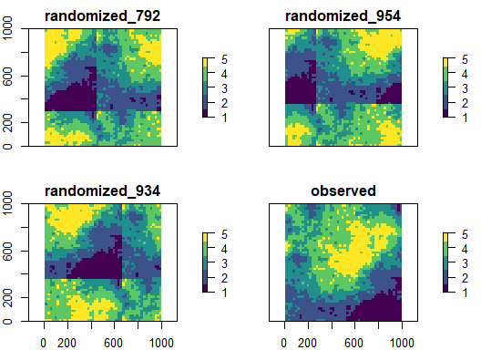
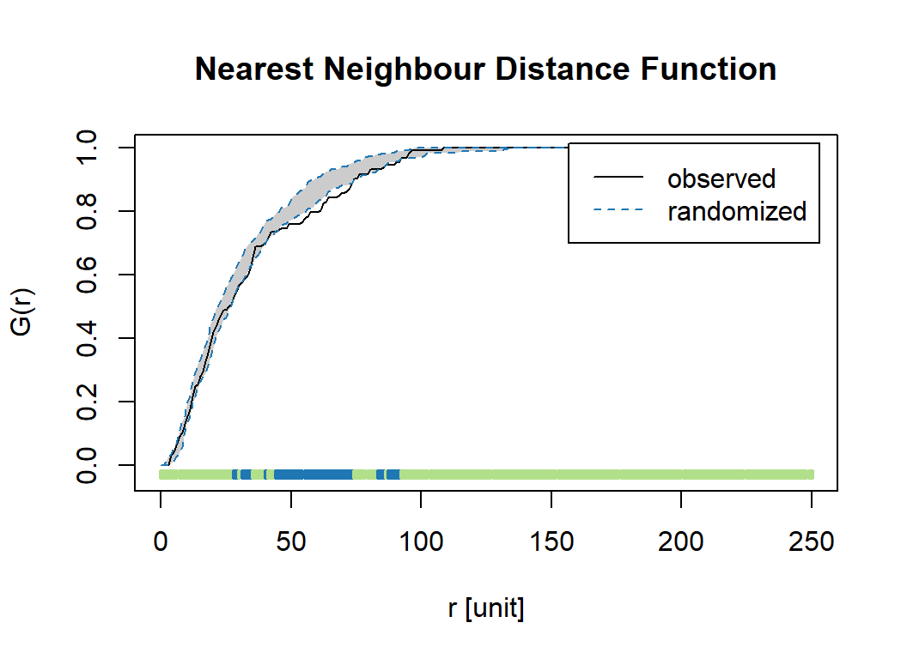
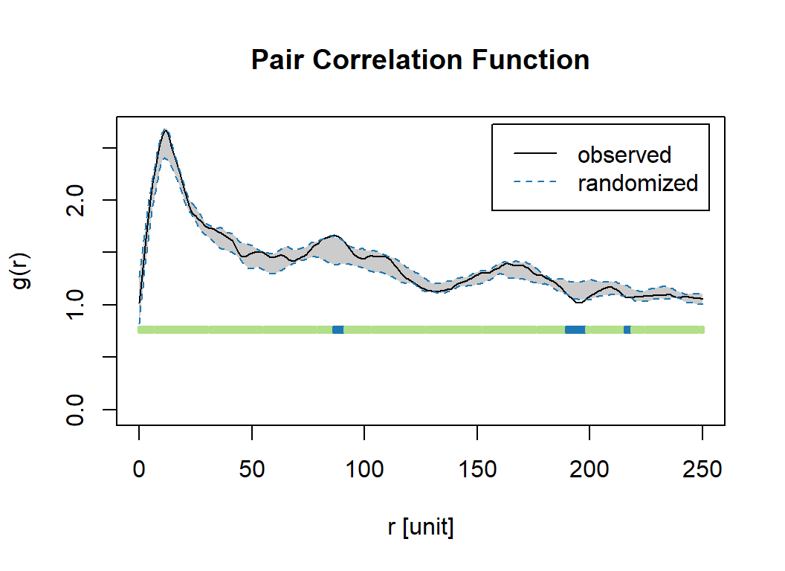

Species-Habitat Associations in R is a R package to analyze species-habitat associations. Therefore, information about the location of the species is needed (as a point pattern) and about the environmental conditions (as a raster map). In order to analyse the data for significant habitat associations either the location data or the environmental data is randomized n-times. Then, counts within the habitats are compared between the randomized data and the observed data. Positive or negative associations are present if the observed counts is higher or lower than the randomized counts (using quantile thresholds). Methods are mainly described in Plotkin et al. (2000), Harms et al. (2001) and Wiegand & Moloney (2014). shar is mainly based on the spatstat (Baddeley et al. 2015) and raster (Hijmans 2017) package.
Installation
You can install the released version of shar from CRAN with:
And the development version from GitHub with:
How to use shar
shar comes with build-in example data sets. species_a and species_b are examplary location of species, e.g. trees, as ppp-objects from the spatstat package. landscape contains examplary continious environmental data. However, all methods depend on discrete data. Therefore we need to classify the data first.
There are two possibilities to randomize the environmental data, both described in Harms et al. (2001). The first shifts the habitat map in all 4 cardinal directions around a torus. The second one assigns the habitat values to an empty map using a random walk algorithm. Both functions return a list with randomized rasters and the observed one. For more information on the methods, please click here.
torus_trans <- translate_raster(raster = landscape_classified, verbose = FALSE)
random_walk <- randomize_raster(raster = landscape_classified, n_random = 39, verbose = FALSE)col = c("#440154FF", "#3B528BFF", "#21908CFF", "#5DC863FF", "#FDE725FF")
plot_randomized_raster(torus_trans, n = 3, col = col)
To randomize the point pattern, either use the Gamma test described by Plotkin et al. (2000) or pattern reconstruction (Tscheschel & Stoyan 2006).
gamma_test <- fit_point_process(pattern = species_a, process = "cluster", n_random = 39, verbose = FALSE)
reconstruction <- reconstruct_pattern(pattern = species_b, n_random = 39, verbose = FALSE) # takes some timeOf coures, there are several utility functions. For example, you can plot a randomized pattern or calculate the differences between the observed pattern and the randomized patterns (using summary functions).

calculate_energy(reconstruction, verbose = FALSE)
## randomized_1 randomized_2 randomized_3 randomized_4 randomized_5
## 0.01716646 0.02080741 0.02469685 0.02252225 0.01905148
## randomized_6 randomized_7 randomized_8 randomized_9 randomized_10
## 0.02317256 0.01467501 0.02009006 0.01796639 0.01742050
## randomized_11 randomized_12 randomized_13 randomized_14 randomized_15
## 0.01967685 0.01531558 0.01429541 0.02049072 0.01755755
## randomized_16 randomized_17 randomized_18 randomized_19 randomized_20
## 0.01672621 0.01993774 0.01695963 0.01949814 0.01368794
## randomized_21 randomized_22 randomized_23 randomized_24 randomized_25
## 0.02298234 0.01629161 0.02034008 0.01466430 0.02274970
## randomized_26 randomized_27 randomized_28 randomized_29 randomized_30
## 0.01857961 0.01489574 0.01694560 0.01860603 0.02151825
## randomized_31 randomized_32 randomized_33 randomized_34 randomized_35
## 0.01719001 0.01744145 0.01735466 0.01988854 0.02075585
## randomized_36 randomized_37 randomized_38 randomized_39
## 0.02174524 0.02042854 0.01674873 0.01900174The data was created that species_a has a negative association to habitat 4 and species_b has a positive association to habitat 5. At one point a posititive association to one habitat leads consequently to a negative association to another habitat (and vice versa). All this can be seen in the results.
results_habitat_association(pattern = species_a, raster = torus_trans)
## > Input: randomized raster | Quantile thresholds: negative < 0.025 - positive > 0.975
## habitat count lo hi significance
## 1 1 9 2 14 n.s.
## 2 2 25 9 24 positive
## 3 3 27 11 26 positive
## 4 4 0 11 29 negative
## 5 5 12 5 18 n.s.
results_habitat_association(pattern = reconstruction, raster = landscape_classified)
## > Input: randomized point pattern | Quantile thresholds: negative < 0.025 - positive > 0.975
## habitat count lo hi significance
## 1 1 8 1.00 23.35 n.s.
## 2 2 22 25.85 49.10 negative
## 3 3 33 40.80 68.05 negative
## 4 4 19 44.00 71.10 negative
## 5 5 118 20.85 60.05 positiveReferences
Baddeley, A., Rubak, E., Turner, R. (2015). Spatial Point Patterns: Methodology and Applications with R. London:Chapman and Hall/CRC Press, 2015. http://www.crcpress.com/Spatial-Point-Patterns-Methodology-and-Applications-with-R/Baddeley-Rubak-Turner/9781482210200/
Harms, K. E., Condit, R., Hubbell, S. P., & Foster, R. B. (2001). Habitat associations of trees and shrubs in a 50-ha neotropical forest plot. Journal of Ecology, 89(6), 947-959.
Hijmans, R. J. (2017). raster: Geographic Data Analysis and Modeling. R package version 2.6-7. https://CRAN.R-project.org/package=raster
Plotkin, J. B., Potts, M. D., Leslie, N., Manokaran, N., LaFrankie, J. V., & Ashton, P. S. (2000). Species-area curves, spatial aggregation, and habitat specialization in tropical forests. Journal of Theoretical Biology, 207(1), 81-99.
Tscheschel, A., & Stoyan, D. (2006). Statistical reconstruction of random point patterns. Computational Statistics and Data Analysis, 51(2), 859-871.
Wiegand, T., & Moloney, K. A. (2014). Handbook of spatial point-pattern analysis in ecology. Boca Raton: Chapman and Hall/CRC Press.
Links
- Download from CRAN at
https://cloud.r-project.org/package=shar - Report a bug at
https://github.com/r-spatialecology/shar/issues
License
Developers
- Maximillian H.K. Hesselbarth
Author, maintainer
- Marco Sciaini
Author